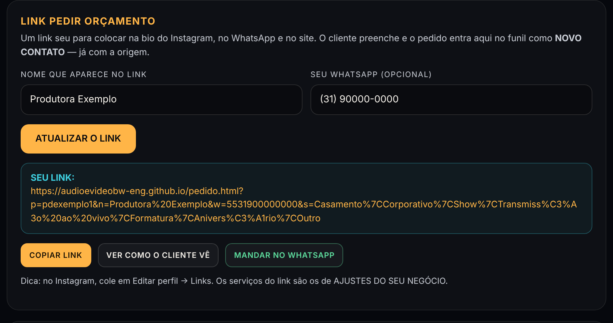
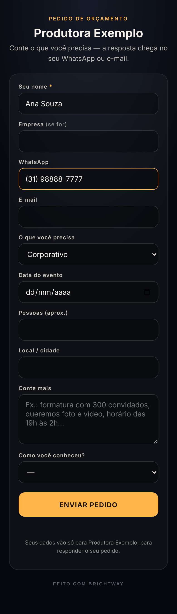

Um link só seu para a bio do Instagram, o WhatsApp e o site. O cliente preenche pelo celular e o pedido cai no seu funil como NOVO CONTATO, já com a origem.
Ao abrir o CRM, os pedidos novos entram no funil e o agente de vendas já coloca o primeiro contato na fila do dia. A lista de serviços do formulário é a de AJUSTES DO SEU NEGÓCIO.


O cliente só envia — não vê nada da sua conta. Link apagado ou inventado não funciona, e cada link aceita no máximo 20 pedidos por hora (contra robôs).